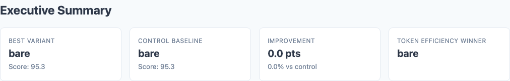
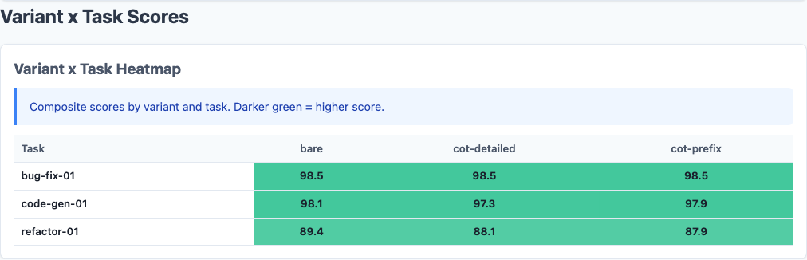
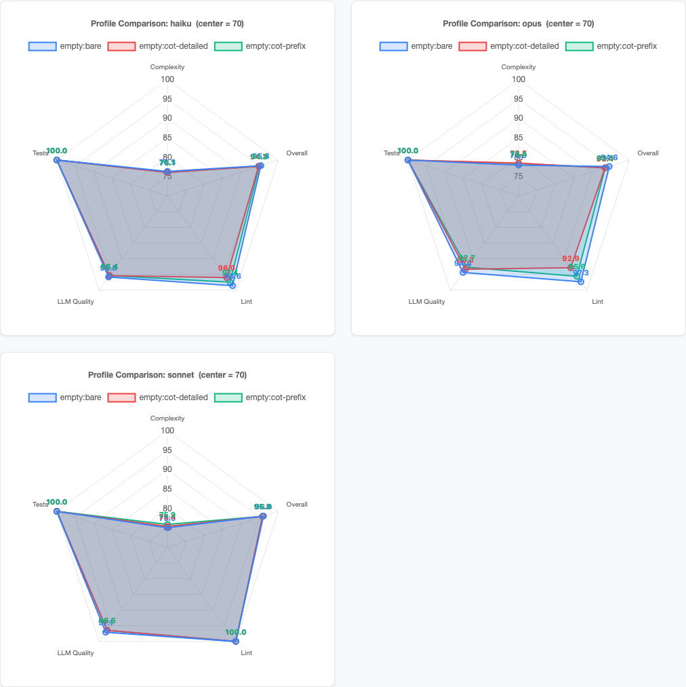
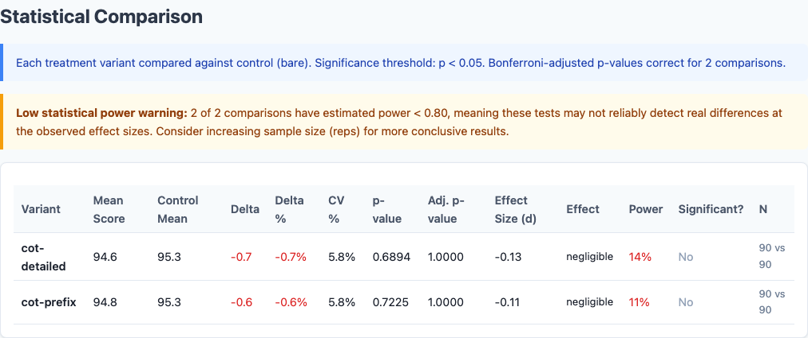
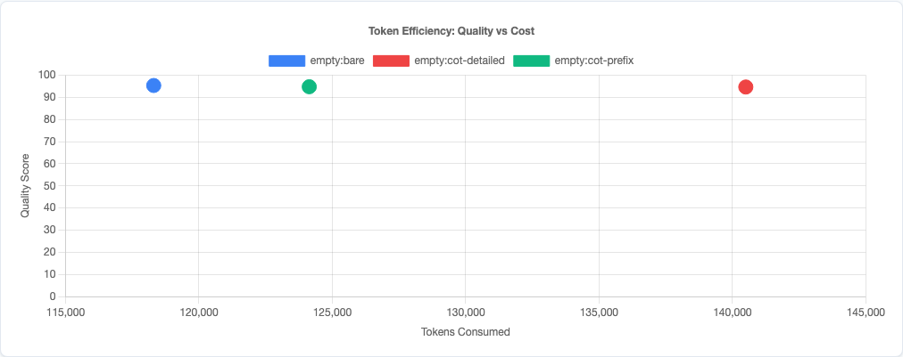

Chain-of-Thought Prompting Makes Code Worse. I Have 270 Runs to Prove It.
"Think step by step." It's one of the most widely repeated pieces of prompt engineering advice. Add a chain-of-thought (CoT) instruction to your system prompt and the model reasons more carefully, produces better output, gets higher scores on benchmarks. It's become an article of faith in the AI tooling community.
After my last round of benchmarks showed that CLAUDE.md instructions generally don't help with generic coding tasks, I wanted to test an even more fundamental assumption: does asking Claude to think before it codes actually produce better code?
I ran 270 benchmarks to find out. The answer is no.
Experiment Design
Using the same claude-benchmark framework from the previous study, I set up a controlled experiment comparing three prompting strategies across three Claude models and three coding tasks.
The Three Variants
| Variant | What It Does |
|---|---|
bare |
No chain-of-thought instruction. The model receives only the task prompt. This is the control. |
cot-prefix |
A light CoT nudge: "Think step by step before writing your solution." One sentence prepended to the task. |
cot-detailed |
An explicit reasoning scaffold: "First analyze the requirements, then plan your approach, then implement, then verify your solution handles edge cases." A structured multi-step instruction. |
The Test Matrix
| Dimension | Values |
|---|---|
| Models | Claude Haiku 4.5, Claude Sonnet 4.6, Claude Opus 4.6 |
| Profile | empty (no CLAUDE.md) |
| Tasks | bug-fix-01, code-gen-01, refactor-01 |
| Variants | bare, cot-prefix, cot-detailed |
| Repetitions | 10 per combination |
| Total runs | 270 |
Ten repetitions per combination is significantly more than the three-per-combination runs in the original CLAUDE.md study. I wanted tighter confidence intervals for smaller effect sizes. With 10 runs, I can detect differences of roughly 1.5 points with reasonable statistical power.
All runs used the empty profile—no CLAUDE.md at all—to isolate the CoT effect from any interaction with system instructions. The previous study established that empty is the strongest baseline, so comparing against it is the hardest possible test.
Results: CoT Never Wins

Executive summary from the benchmark report: bare wins on every model. CoT never helps.
Here's the headline number. Average composite score across all tasks, 10 runs each:
| Model | bare | cot-prefix | cot-detailed |
|---|---|---|---|
| Haiku | 95.3 | 94.9 | 94.7 |
| Sonnet | 96.0 | 95.8 | 95.8 |
| Opus | 94.6 | 93.5 | 93.4 |
Delta from Bare Baseline
| Model | cot-prefix | cot-detailed |
|---|---|---|
| Haiku | -0.41 | -0.63 |
| Sonnet | -0.23 | -0.28 |
| Opus | -1.05 | -1.14 |
Two patterns jump out. First, cot-detailed is worse than cot-prefix on every model. More explicit reasoning instructions produce worse code than a light nudge, which produces worse code than no instruction at all. Second, the more capable the model, the larger the penalty—Opus takes the biggest hit.
Task-Level Breakdown

Variant x Task heatmap: refactor-01 is where CoT does real damage. Bug-fix and code-gen are saturated.
The overall numbers hide a ceiling effect. Let's break it down by task:
| Model | Variant | bug-fix-01 | code-gen-01 | refactor-01 |
|---|---|---|---|---|
| Haiku | bare | 98.5 | 98.0 | 89.5 |
| cot-prefix | 98.5 | 98.0 | 88.3 | |
| cot-detailed | 98.5 | 97.7 | 87.9 | |
| Sonnet | bare | 98.5 | 97.7 | 91.9 |
| cot-prefix | 98.5 | 97.1 | 91.9 | |
| cot-detailed | 98.5 | 95.8 | 93.0 | |
| Opus | bare | 98.5 | 98.5 | 86.8 |
| cot-prefix | 98.5 | 98.5 | 83.6 | |
| cot-detailed | 98.5 | 98.5 | 83.3 |
Bug-fix-01 scored a perfect 98.5 across all 90 runs—every model, every variant, every repetition. There is zero variance. The task is saturated. Code-gen-01 is nearly as flat. The entire signal in this experiment comes from refactor-01, the only task hard enough to differentiate prompting strategies.
The Sonnet Exception
Sonnet is the one model that shows a mixed signal. On refactor-01 specifically, cot-detailed scored 93.0 versus bare's 91.9—a +1.1 improvement. But this gain was fully offset by a -1.9 drop on code-gen-01 (95.8 vs. 97.7). The net effect is still negative.
This suggests that CoT instructions can redirect a model's attention toward certain quality dimensions (architecture, structure) at the cost of others (conciseness, directness). For refactoring—where planning the restructuring is genuinely valuable—the tradeoff occasionally pays off. For code generation—where the model just needs to execute a spec cleanly—the extra deliberation adds noise.
Why CoT Hurts Code Generation
Chain-of-thought prompting was developed for and validated on reasoning tasks: math problems, logic puzzles, multi-step inference. Tasks where the model might skip a step or lose track of intermediate results. "Think step by step" forces it to show its work, and that discipline catches errors.
Code generation is different. These models don't struggle with the reasoning part of coding—they struggle with the taste part. Writing clean code, choosing good abstractions, knowing when to stop refactoring. These are judgment calls, not reasoning chains. Telling a model to "first analyze, then plan, then implement" doesn't improve judgment. It just adds an overhead step that can introduce its own problems:
- Over-engineering. When told to "plan your approach," models tend to design more elaborate solutions than necessary. The planning step primes them toward abstraction and structure, which is counterproductive when the best solution is straightforward.
- Self-constraint. Explicit reasoning steps can lock the model into a suboptimal approach early. Once it has "analyzed the requirements" and committed to a plan in its reasoning, it's less likely to pivot to a simpler solution mid-implementation.
- Attention dilution. Every token of meta-instruction is a token not spent on the actual task. For a model that already reasons internally (which all modern Claude models do), the CoT instruction is redundant at best and distracting at worst.
The Opus Effect
The most striking finding is that Opus—the most capable model—suffered the largest quality penalty from CoT. This makes sense if you think about what CoT does: it imposes a reasoning structure from outside. A less capable model might benefit from that structure because it compensates for weaker internal reasoning. A highly capable model already has sophisticated internal reasoning—the external structure interferes with it.
This is the cognitive equivalent of giving a chess grandmaster a "first consider all captures, then consider all checks" checklist. The checklist might help a club player, but it constrains the grandmaster's pattern recognition. The grandmaster already evaluates positions holistically; forcing sequential analysis makes them worse.
Opus's 3.5-point drop on refactor-01 suggests exactly this dynamic. Refactoring requires holistic judgment about code structure—seeing the whole shape of the solution and reshaping it. Step-by-step instructions fragment that holistic view.
Variance and Consistency

Per-model radar charts: Opus shows the clearest CoT penalty, Haiku and Sonnet are tighter.
Beyond average scores, the variance tells a story too:
| Model | Variant | refactor-01 StdDev |
|---|---|---|
| Haiku | bare | 3.6 |
| Haiku | cot-prefix | 3.5 |
| Haiku | cot-detailed | 3.8 |
| Sonnet | bare | 2.3 |
| Sonnet | cot-prefix | 2.0 |
| Sonnet | cot-detailed | 2.1 |
| Opus | bare | 3.2 |
| Opus | cot-prefix | 2.7 |
| Opus | cot-detailed | 2.2 |
For Opus, CoT did reduce variance—standard deviation dropped from 3.2 to 2.2. But it reduced variance by pulling down the ceiling, not by raising the floor. Opus's best bare run scored 90.2; its best cot-detailed run scored 87.1. The consistency came at the cost of never reaching the higher scores that unconstrained reasoning could achieve.

Full statistical comparison from the benchmark report, including effect sizes and confidence intervals.
Connection to the CLAUDE.md Study
This result reinforces the central finding from the previous 1,188-run benchmark: for generic coding tasks, additional instructions degrade quality. The mechanism is the same whether the instruction is "use snake_case" or "think step by step"—you're adding information the model already has, and the redundancy introduces noise.
The correlation between instruction token count and quality from Phase 2 of that study was r = -0.95. CoT instructions are just more tokens on the same curve. They follow the same pattern: every additional token of meta-instruction marginally decreases quality on tasks the model already handles well.
But just as the CLAUDE.md study found that targeted instructions help on specific weaknesses (workflow instructions lifted Opus's instruction-following score by +5.8), there may be coding scenarios where CoT genuinely helps. The candidates would be tasks requiring genuine multi-step reasoning that the model gets wrong without prompting—complex debugging chains, multi-file dependency analysis, or architecture decisions with cascading constraints. These tasks weren't in this benchmark.

Token efficiency scatter: CoT costs more tokens and produces worse code. Lose-lose.
What This Means for Your Prompts
- Don't add "think step by step" to coding prompts by default. On these three tasks across three models, it never helped and usually hurt. The models already reason internally. The instruction is redundant.
- More detailed CoT instructions are worse, not better.
cot-detailedscored lower thancot-prefixon every model. If you're going to use CoT, keep it minimal. The more structure you impose, the more you constrain the model's natural reasoning. - Capable models are hurt more than weaker ones. Opus suffered a 1.14-point overall penalty; Sonnet only 0.28. If you're using a top-tier model, CoT instructions are actively counterproductive.
- Save CoT for genuine reasoning challenges. Math, logic, multi-step inference, ambiguous requirements that need decomposition. Don't use it for "write a function that does X"—the model doesn't need help reasoning through implementation.
- Measure, don't assume. CoT is one of those techniques everyone "knows" works because it works on reasoning benchmarks. But coding isn't a reasoning benchmark. The only way to know if a prompting technique helps your specific workflow is to measure the output.
Limitations
- Three tasks isn't enough. Two of them were saturated (98.5 across all runs). The signal comes from a single refactoring task. A broader task set—especially tasks involving complex reasoning chains—might show different results.
- Single-file only. Real-world coding involves navigating codebases, understanding dependencies, and planning across files. CoT might genuinely help with multi-step planning in those scenarios.
- No extended thinking. This tests CoT as a system prompt instruction, not Claude's native extended thinking feature. Extended thinking operates differently—it gives the model dedicated reasoning space without consuming output tokens. That's a different experiment.
- Generic tasks only. These are domain-agnostic coding problems. Domain-specific tasks with unfamiliar requirements might benefit from explicit reasoning scaffolds.
Try It Yourself
The experiment configuration and all 270 runs are available in the claude-benchmark repository. Run the experiment against your own tasks:
pip install claude-benchmark
# Run the chain-of-thought experiment
claude-benchmark experiment run experiments/chain-of-thought.yaml
# Generate the report
claude-benchmark experiment report results/experiment-chain-of-thought-*/Or define your own variants. If you find a coding task where CoT consistently helps, I'd genuinely like to see it. That would tell us something interesting about where the boundary lies between tasks that benefit from explicit reasoning and tasks that don't.
Want to benchmark your own AI coding workflows?
I help teams measure and optimize their AI-assisted development processes—from prompt engineering to infrastructure automation. Get a free assessment to find where data-driven decisions can improve your output quality.
Get Your Free Assessment